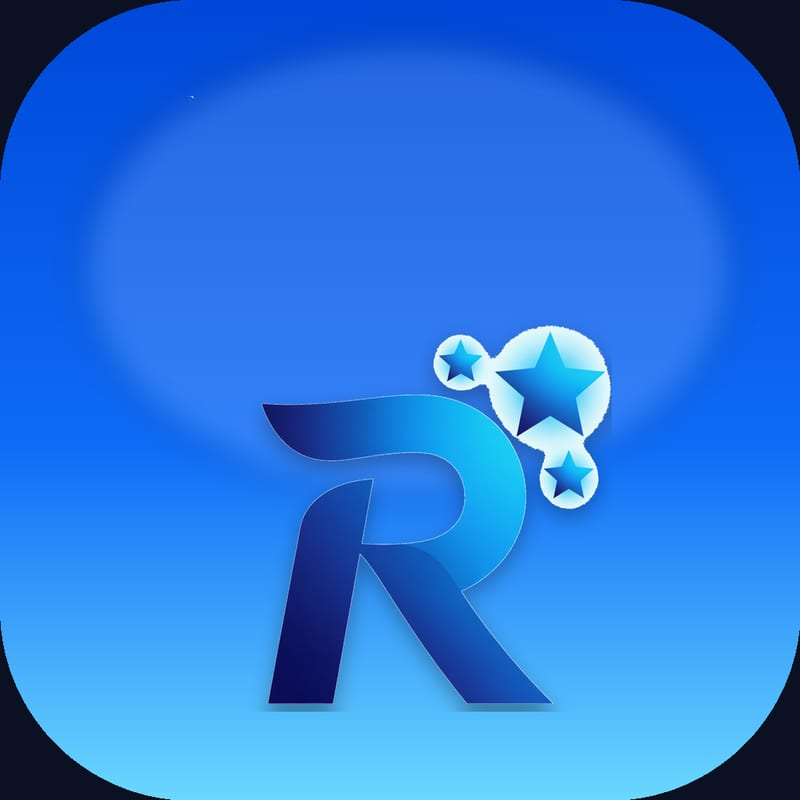

CRM pour délégués médicaux : gestion des clients et visites, carte Google Maps, scanner, analytics, rappels et export. Architecture feature-first et thèmes Material 3.
FlutterRiverpodGoRouterSupabaseGoogle Maps
Mobile
HeartBeat
« Un tap. Un battement. Une personne. »
App émotionnelle privée : envoie un battement de cœur à ton partenaire connecté. Livraison push FCM en arrière-plan, invitations par QR, détection double-cœur et statistiques.
FlutterSupabase RealtimeFCMHive
Full-stack
WonderTech Intervention Platform
Gestion d'interventions techniques
Solution full-stack : API Node/Express en TypeScript (Prisma, BullMQ) + app Flutter offline-first. Authentification technicien, workflows d'intervention, exports PDF, notifications email et synchronisation.
Node.jsExpressPrismaBullMQFlutterDrift
Full-stack
Help-Desk & Maintenance
Ticketing multi-rôles
Application d'assistance mobile-first avec rôles client, technicien et admin. Flux de statuts New → Assigné → En cours → Terminé, chat temps réel et pièces jointes photo.
FlutterSupabase AuthPostgreSQLRealtimeStorage
Mobile
WonderTech Technicien Manager
Coordination d'équipes terrain
App Flutter Material 3 reliant développeurs, admins, techniciens et clients. Backend Supabase (Auth, Postgres, RLS, Realtime, Storage) avec accès par rôle.
FlutterMaterial 3SupabaseRLS
SaaS
StayPilot — AI Guesthouse OS
SaaS maisons d'hôtes · Next.js
Dashboard full-stack pour maisons d'hôtes : réservations, calendrier, paiements, KPIs d'occupation, concierge IA (FR/EN/AR) et synchronisation Gmail des réservations.
Next.jsTypeScriptTailwind v4SupabaseNextAuth
Mobile

Resa Pro
Plateforme de réservation
Application de réservation construite avec Flutter et Supabase — authentification, base de données et gestion des créneaux, avec documentation d'architecture complète.
FlutterSupabasePostgreSQL
Live
Web
WonderTech — Site vitrine
Site services IT professionnel
Site vitrine multi-pages pour une marque de services informatiques (services, produits, infrastructure, solutions métier), avec un système d'animations à révélation progressive fait main.
Site marketing pour un café/torréfacteur avec animations Framer Motion, carrousel Embla et formulaires validés (React Hook Form + Zod). Design chaleureux et immersif.
Next.js 15React 19Framer MotionZod
Full-stack
ERP — Client / Serveur
Gestion d'entreprise · .NET
Système ERP en architecture client-serveur : client de bureau C#/XAML (MVVM) et serveur ASP.NET avec authentification, contrôleurs, DTOs et couche de données.
C#.NETXAMLASP.NETMVVM
Mobile · WIP
Love Quest
App Flutter · en développement
Projet Flutter multiplateforme en cours de conception — une expérience ludique et interactive pensée mobile-first.
FlutterDart
Étude de cas
WonderTech Scan en détail
WonderTech Scan (Application Mobile)
Scan
WonderTech Scan est une application mobile que j'ai développée pour faciliter et accélérer la lecture des codes-barres, avec une fonctionnalité de gestion de stock intégrée. Elle permet à tout utilisateur de scanner rapidement des codes-barres ou QR codes, tout en assurant un suivi efficace des stocks. Elle se distingue par sa rapidité, sa fiabilité et sa compatibilité avec tous les smartphones Android et iOS.
Un véritable honneur de recevoir ce type de demande et de développer mes compétences en programmation avec Flutter lors de la réalisation de ce projet.
Écran d'accueil
Dès l'ouverture, un écran d'accueil moderne présente quatre boutons principaux :
Scanner : ajouter un nouveau document ou importer un document existant. Stock : accéder à la liste des documents dont les codes-barres ont été scannés. Paramètres : personnaliser les réglages de l'application. Documents Validés : retrouver tous les documents validés à partir du stock.
Choisir une option pour le document
L'utilisateur choisit entre deux actions :
Importer un Document : depuis la page Stock ou un fichier XLS/CSV externe. Créer un Nouveau Document : démarrer la création d'un nouveau document, avec un guidage vers l'étape suivante.
Saisie des informations
L'agent renseigne son nom et le lieu de scan.
Numéro du Document : généré automatiquement (ex : DOC-20250709-006). Date : récupérée automatiquement. Chaque opération est ainsi tracée : agent, lieu, numéro unique et date.
Page de scan des codes-barres
Le cœur de l'application. À la première utilisation, l'app demande l'accès caméra et stockage.
• Scan fluide et rapide des codes-barres ou QR codes.
• Activation/désactivation du flash selon la luminosité.
• Résultats affichés instantanément sous la zone de scan.
Gestion des quantités
Chaque code scanné est ajouté à la liste.
• Un même code re-scanné incrémente automatiquement sa quantité (+1).
• Ajustement manuel via les boutons « + » / « – » ou saisie directe. Suivi précis et rapide des stocks.
Saisie manuelle ou via PDA
Grande flexibilité de saisie :
• Saisie manuelle d'un code dans le champ dédié.
• Utilisation d'un appareil PDA pour scanner plus vite.
• Bouton « Accueil » pour revenir à tout moment. Tous les codes sont enregistrés en temps réel dans le Stock.